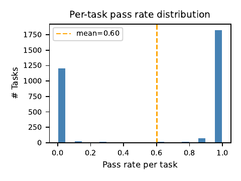
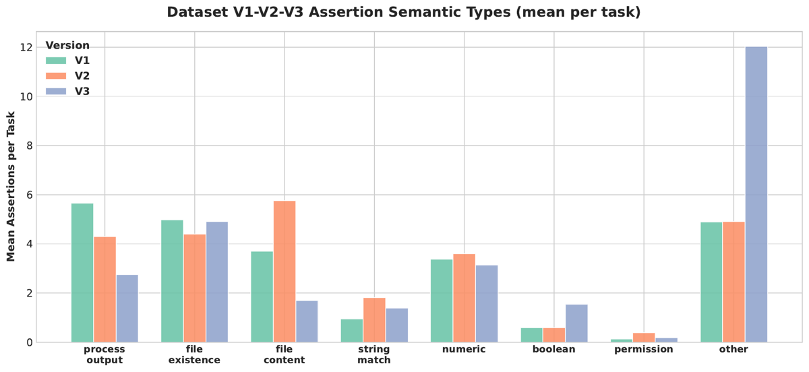
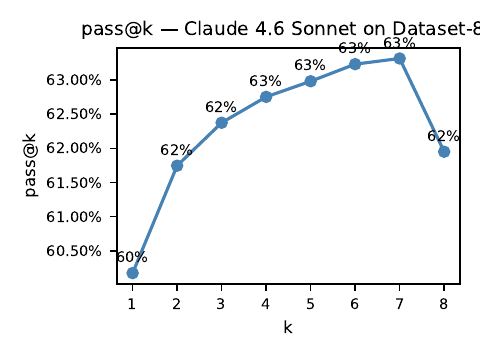

Retour d'expérience SAP sur la réimplémentation du pipeline Endless Terminals (Gandhi et al.) vers Docker/Harbor : 18 185 tâches terminal générées par Claude Opus, trois runs RL (un PPO 3B, deux GRPO 9B), et un inventaire des façons dont un conteneur qui boote et une suite pytest qui tourne ne garantissent rien sur le signal RL.
Claim principal, tel que formulé : la solvability band — la plage de pass rate par tâche où le RL progresse — est model-specific ; preuve avancée : un 9B passe de 81,3 % à 20,6 % de mean pass@2 « without changing the training configuration » quand on ajoute des tâches dures [abstract, §5.2, §7].
⚠️ Verdict d'emblée : le chiffre de tête est contredit par la table du papier lui-même (Tab. 3 donne 9,8 % → 10,1 %, pas 20,6 %), les deux bras ne sont appariés ni en steps (20 contre 190) ni en taille de dataset (3 238 contre 6 529 tâches), et le papier publie au §6.3 un contrôle qui fait plus de dégâts que son propre effet : sur le même jeu de 151 tâches, passer la concurrence de 40 à 16 conteneurs fait monter le pass@2 de 4,6 % à 76,8 %. L'effet « difficulté » revendiqué (−60,7 pt) est plus petit que l'effet « concurrence Docker » non revendiqué (+72,2 pt), et rien n'isole l'un de l'autre.
Origine — entièrement synthétiques, méta-agent frontier. Squelette en cinq étapes repris de gandhi2025endless, chaque étape étant un appel LLM batché conditionné sur les sorties précédentes [§1, §3] :
<task> (instruction montrée à l'agent) + <truth> (ground truth privilégiée du grader)test_initial_state.py (pytest)test_final_state.py (pytest, reçoit le test initial en contexte)DockerfileLes quatre system prompts sont recopiés verbatim [App. A.1–A.4] — c'est le meilleur apport reproductible du papier. Les user messages, eux, « are constructed programmatically from templates and are not reproduced here » [App. A] : les buckets de catégorie, la persona, le niveau de difficulté, la command complexity (bash-only / bash+python / bash+python+services) et la workflow length sont donc non précisés dans leur formulation exacte.
Ce qui change par rapport au prédécesseur [§3.1–3.4] :
- Apptainer → Docker (contrainte Harbor) ; prompt Stage 4 réécrit autour des heredocs, de l'absence de systemd, de l'interdiction du Docker-in-Docker, du non-root et des wrappers CMD.
- Six niveaux de complexité définis par nombre de commandes → trois niveaux de difficulté cognitifs. Argument des auteurs, correct : « chmod +x foo et un fix sed d'une ligne sont tous deux des tâches à une commande » [§3.3]. Hard = au moins un critère sur cinq : symptôme trompeur, contraintes conflictuelles, connaissance de domaine requise, grand espace d'états, reverse engineering.
- Pre-agent validation : après build, on exige que le test initial passe et le test final échoue, avant tout rollout. Absent du pipeline d'origine, qui ne découvrait les mismatchs qu'au sampling [§3.4]. C'est le seul détecteur automatique réellement déployé du papier.
- Round-robin sur dix buckets déclarés : file_ops, networking, services, security, debugging, data_processing, git_ops, system_admin, build_tools, text_processing [§3.3].
Volume et distribution [Tab. 1] :
| Dataset | Générateur | Contexte | Tâches | Pass@1 (filtre) | Stratégie catégorie |
|---|---|---|---|---|---|
| V1 (« Dataset-4k ») | Opus 4.6 | 4 096 | 5 038 | ~10 % | Round-robin |
| V2 (« Dataset-8k ») | Opus 4.6 | 8 192 | 4 929 | 56,5 % | Couplage difficulté × catégorie |
| V3 (« Dataset-5k ») | Opus 4.8 | 8 192 | 8 218 | 39,6 % | Difficulté d'abord, catégorie ensuite |
5 038 + 4 929 + 8 218 = 18 185 ✓ (claim de contribution n° 1 arithmétiquement confirmé). ⚠️ V3 est étiqueté « Dataset-5k » pour 8 218 tâches — label faux. ⚠️ V1 n'a pas de pass@1 exact, seulement « ~10 % » : c'est le dénominateur du 5,6× de l'abstract.
Distribution de difficulté — cible annoncée : medium 63 %, easy 18,5 %, hard 18,5 % « pour éviter les queues lourdes » ; réalisé dans V3 après filtrage de solvabilité : easy 57 %, medium 36 %, hard 7 % [§4.2]. La cible et le réalisé se contredisent sur les trois cases ; les auteurs ne commentent pas l'écart. La sous-représentation du hard est ensuite reconnue comme failure mode (7,0 % d'un batch source de 3 310 tâches [Tab. 4]).
Validation de l'échelle de difficulté — sur un sous-échantillon aléatoire de 1 000 tâches, le pass rate décroît avec la difficulté : easy 97 %, medium 92 %, hard 89 %. Les auteurs concluent « this confirms the cognitive difficulty definitions are meaningful » [§4.2]. ⚠️ Un écart de 8 points entre easy et hard, sur des tâches déjà filtrées pour la solvabilité, et sans IC : à n≈1 000 réparti 57/36/7, la strate hard compte ~70 tâches, IC binomial à 89 % ≈ [79 %, 95 %] — elle chevauche la strate medium. L'échelle n'est pas validée, elle est seulement non infirmée.
Filtrage par pass@k — oui : solution.json par tâche, étiquette de solvabilité empirique = « au moins une tentative passante » sur 8 tentatives, justifiées comme « sweet point » par Fig. 8 gauche [§4.1]. ⚠️ Voir §8 : cette courbe pass@k décroît de k=7 à k=8, ce qui est mathématiquement impossible pour un pass@k correctement estimé sur un jeu fixe. Le seuil de 8 tentatives repose sur une courbe non valide.
Déduplication — 1 753 de 6 682 candidats bruts retirés (26,2 %) à un seuil de similarité de 0,85 ; 1 461 d'entre eux dans la bande 0,85–0,95 [§6.1]. Nature de la métrique de similarité (embedding ? n-grammes ?) : non précisé. Effet de la dédup sur l'entraînement : non mesuré.
Contamination / séparation train-test — E1 : 457 tâches d'entraînement downsamplées de V1, 51 tâches held-out, éval tous les 20 steps. E2–E3 : 3 238 puis 6 529 tâches ; le jeu de validation de 151 tâches apparaît au §6.3. ⚠️ Train et test sortent du même générateur, du même prompt, des mêmes buckets : c'est un split, pas une séparation de distribution. Contamination du pré-entraînement Qwen par des tâches sysadmin publiques : non discutée.
Données SFT/IFT avant RL — aucune. RL direct sur modèle instruct.
Coût humain — aucune annotation revendiquée. Mais le papier repose en pratique sur de l'inspection humaine non chiffrée : les deux failure modes de génération (Worksheet Voice, Grader Leakage) sont décrits qualitativement avec des exemples, sans taux ni protocole d'étiquetage ; le taux de guards anti-shortcut vient d'un « baseline quality sample » dont n n'est pas donné [§6.1]. Heures d'expert : non précisé.
Framework — Harbor v0.16.1 [cité, DOI Zenodo], adopté à la fois comme format de tâche et comme harness d'évaluation. Layout imposé par tâche [App. B] :
task_<id>_<hash>/
instruction.md # prompt montré à l'agent
task.toml # difficulty, timeouts, resources
environment/Dockerfile
environment/task.json # description + ground truth
environment/test_initial_state.py
solution/ # solution(s) de référence
tests/test.sh # vérifieur : lance pytest, écrit le reward
tests/test_final_state.py
Observation / actions — shell dans un conteneur ubuntu:22.04, agent Terminus2 de Harbor. Signatures d'outils : non précisées (le papier ne décrit jamais l'interface de Terminus2 ; aucune trajectoire d'exemple nulle part). Contraintes d'environnement imposées par prompt [App. A.1] : pas de root, home /home/user, pas d'internet, conteneur unique, pas de Docker-in-Docker / K8s / systemd / GUI, services en foreground/background.
Horizon — le point le plus sous-estimé du papier : « the Terminus2 agent with at most eight turns per rollout » [§5]. Huit tours de shell. ⚠️ Pour une tâche dure définie par « large state space » ou « reverse engineering » [§3.3], huit tours est un plafond structurel : le collapse de E3 est au moins partiellement attribuable au budget de tours, pas à la difficulté intrinsèque. Et le budget de tours utilisé pendant la solution generation (celle qui produit les labels de solvabilité et le chiffre de référence Opus) n'est jamais donné — on ne sait donc pas si l'agent d'entraînement et l'agent de filtrage ont le même horizon.
Longueur de séquence — 4 096 tokens max pour E1 [§5.1]. Pour E2–E3, « sequence length fixed » sans valeur : non précisé.
Gestion du contexte long / compaction — aucune mention. Pas de troncature, pas de résumé, pas de compaction décrite. À 8 tours et (pour E1) 4 096 tokens, la question ne se pose probablement pas — mais elle n'est pas écartée explicitement. La panne « propriété de préfixe cassée » est donc inapplicable ou non testée, impossible de trancher.
Exécution, déterminisme, reset, timeouts — c'est ici que le papier a sa vraie matière [§6.2] :
- Chaque tentative rebuilde l'image de la tâche, pour une moyenne de 163 s passées en setup d'environnement. Conserver les images réduirait les rebuilds mais « was infeasible at the reported scale because of disk demand ».
- Douze builds Docker concurrents saturent ~29,7 des 32 cœurs CPU.
- Trois tâches évaluées localement ont dépassé la limite de démarrage de 600 s (seeding de grosses bases, dépôts, exports de logs).
- Mitigations déclarées [§7] : préfixe de syntaxe BuildKit dans le générateur de Dockerfile (pour les heredocs), isolement des « known heavy-build tasks » avec un timeout plus long, plafonnement de la concurrence, docker cleanup périodique. Aucune de ces mitigations n'a d'effet chiffré, sauf le plafonnement de concurrence (voir §7.1).
Erreurs d'outils et sorties mal formées — traitées au niveau du harness, pas de l'agent : les trials en erreur sont retirés (« Some limitations persist even after failed trials are removed » [§6.2]). ⚠️ Mais le papier ne dit nulle part si, pendant l'entraînement RL, un épisode qui erre est retiré du groupe GRPO ou scoré 0. C'est exactement la case d'infra que la grille réclame, et elle est non précisée — alors que le papier mesure lui-même 9,1 % + 9,7 % de taux d'échec Docker. Si ces épisodes sont scorés 0, le reward de E3 est mécaniquement déprimé et l'« effet difficulté » est en partie un artefact.
Exemple de trajectoire — absent.
Type — binaire, exact-ish, par exécution. « the verifier writes reward 1 when the final-state pytest passes and 0 otherwise. We follow this convention throughout » [§3.1]. Pas de crédit partiel malgré une moyenne de 24–28 assertions par tâche : la conjonction de toutes les assertions est la seule règle d'agrégation, implicitement (pytest échoue au premier assert faux).
⚠️ Conséquence non discutée par les auteurs : avec ~27 assertions en conjonction dure et un prompt Stage 3 qui demande explicitement d'« asserter l'exact expected end state », la probabilité qu'une tâche correcte passe décroît géométriquement avec le nombre d'assertions. Le papier mesure la croissance du nombre d'assertions (V1 24,3 → V3 27,6) comme un progrès (« more thorough verifiers over time » [§4.4]) sans jamais tester si c'est un progrès de fidélité ou un durcissement de la clause d'échec. C'est l'hypothèse la plus simple pour expliquer pourquoi V3 est le dataset où tout le monde échoue.
Granularité — outcome pur, un seul bit en fin d'épisode. Pas de process reward, pas de reward de format, pas de terme additionnel (pas de KL explicite mentionnée, pas de pénalité de longueur).
Fiabilité mesurée, FP et FN séparés — absente. Zéro faux positif, zéro faux négatif, aucun dénominateur, aucune comparaison à un jugement humain. L'abstract annonce des « verifier audits … as first-class evaluation criteria » : le papier les recommande, il n'en conduit aucun. C'est la principale sur-promesse structurelle du papier.
Proxies de qualité du vérifieur réellement calculés — trois, tous sur les 18 185 tâches, tous purement statiques :
1. Nombre d'assertions par tâche : V1 moyenne 24,3 → V3 27,6, « shifting noticeably rightward » [§4.4, Fig. 7].
2. Typage sémantique des assertions [§4.4, Fig. 3] : process output 5,7 (V1) → 2,7 (V3) ; file content 5,8 (V2) → 1,7 (V3). Les auteurs nomment ça « a trade-off ». ⚠️ Voir §8 : la figure montre que la hausse du total vient entièrement de la catégorie other, qui passe de ~4,9 à 12,0 par tâche. Autrement dit le vérifieur de V3 asserte plus et observe moins. Les auteurs ne font pas ce rapprochement.
3. Présence des anti-shortcut guards : « roughly 60 % of task truth blocks », « but the generation pipeline did not validate their presence » [§6.1]. Soit ~40 % des tâches sans garde anti-triche, sans correctif appliqué.
Plus deux métriques annoncées mais reléguées aux travaux futurs [§7] : un assertion matching score (« 16,6 % tasks show few assertions check the desired command outcomes ») et un description–test overlap score qui « flags potential drift from the real task intent ». Le 16,6 % suggère qu'au moins la première a été calculée ; aucun protocole, aucune validation.
Prompt du vérifieur, recopié [App. A.3] — les règles de Stage 3 qui comptent pour un transfert :
- « Prefer semantic validation over exact string matching » : parser JSON/YAML plutôt que comparer des chaînes, in/regex plutôt que l'égalité de lignes, tolérance numérique.
- « Never check exact whitespace, trailing newlines, or formatting that the task didn't explicitly specify. »
- « For easy tasks, tests should check simple outcomes … For hard tasks, tests can check complex multi-faceted state but should still validate semantics over exact formatting. »
- ⚠️ Le prompt Stage 3 ne mentionne jamais les anti-shortcut guards. Ils sont demandés au Stage 1 (dans le bloc <truth>, item 4 de 4), et le {truth} est passé au Stage 3 — mais aucune instruction n'oblige le générateur de vérifieur à les implémenter. L'absence de guards dans 40 % des tâches est donc une conséquence directe et prévisible de l'architecture des prompts, pas un accident.
- ⚠️ Fuite de registre résiduelle : les prompts Stage 2 et Stage 3 appellent l'agent « the student » (« before the student performs the action »), alors que tout le Stage 1 est consacré à bannir la worksheet voice. L'anti-fuite n'est appliquée qu'à l'étape 1 sur 5.
Le vérifieur a-t-il été attaqué ? — non. Aucune solution dégénérée, aucun mutant, aucune politique entraînée à l'exploiter, aucun test de politique adverse. Le reward hacking est traité comme un risque dérivé de l'absence de guards (« Missing guards create a reward hacking risk » [§6.1]), jamais comme un comportement observé.
Le juge voit-il la trajectoire ? — non : le vérifieur ne voit que l'état final du conteneur. Choix cohérent (vérifieur d'état, pas de process), mais cela veut dire qu'un agent qui atteint le bon état final par un chemin interdit (si aucun guard ne le bloque — 40 % des cas) touche le reward plein.
Framework — SkyRL [skyrl1, skyrl2], reward binaire du vérifieur Harbor, agent Terminus2, ≤ 8 tours par rollout dans les trois expériences [§5].
E1 — PPO [§5.1] : Qwen/Qwen2.5-3B-Instruct, 457 tâches downsamplées de V1, 2 epochs = 228 gradient steps, 4 tâches par step × 4 samples par tâche (16 rollouts/step), seq len max 4 096, éval sur 51 tâches held-out tous les 20 steps.
E2–E3 — GRPO [§5.2] : Qwen/Qwen3.5-9B sur une instance H200, batch de 8 tâches × 2 samples par prompt (16 rollouts/step). E2 : 3 238 tâches (V1+V2), 20 steps. E3 : + 3 291 tâches hard de V3 = 6 529 tâches, 190 steps.
Hyperparamètres manquants — et c'est massif : coefficient KL, clipping, normalisation de l'avantage, learning rate, température de sampling, longueur max pour E2–E3, nombre d'epochs PPO par batch, on/off-policy, seeds. Tous non précisés. Le papier donne quatre hyperparamètres sur une quinzaine.
Ce qui a cassé, et comment ils l'ont réparé — rien côté algo. Tout le §6 porte sur des pannes de génération et d'infra, aucune sur l'optimisation (pas de divergence, pas de collapse d'entropie, pas d'instabilité rapportée). Dynamique rapportée : la seule statistique est le mean reward standard deviation (0,42 pour E2, 0,37 pour E3 [Tab. 3]), présenté comme preuve que le signal ne s'effondre pas. ⚠️ Aucune courbe de reward, de longueur ou d'entropie dans tout le papier.
Compute — une instance H200 pour E2–E3 ; E1 non précisé. Coût par step : non précisé, mais calculable partiellement — 16 rollouts × 163 s de setup d'image moyen ≈ 43 min de setup pur par gradient step si les builds sont sérialisés, ce qui situe le vrai goulot. Les auteurs reconnaissent « the high expenses of large-scale training and evaluation » comme contrainte [§7].
C'est la section pour laquelle on lit le papier. Elle est organisée en trois portes d'entrée [Fig. 4] : génération, exécution d'environnement, agrégation. Chaque cas ci-dessous : comportement → détection → correction → la correction est-elle évaluée ?
| Cas | Portée observée | Détection | Correction | Évaluée ? |
|---|---|---|---|---|
| Worksheet voice (« The output should… », « Ensure that… ») | aucun dénominateur | inspection qualitative (implicite) | prompt Stage 1 : banned phrasings verbatim + self-check en 9 points | non — aucun taux avant/après |
| Grader leakage (la tâche restate le critère de vérification) | aucun dénominateur | inspection qualitative | section anti-leakage + « Values in <truth> must NOT appear in <task> » |
non |
| Quasi-doublons | 1 753 / 6 682 = 26,2 %, dont 1 461 en similarité 0,85–0,95 | détecteur automatique, seuil 0,85 (métrique non précisée) | suppression | non — effet sur l'apprentissage non mesuré |
| Guards anti-shortcut absents | ~40 % (présents dans « roughly 60 % » d'un « baseline quality sample », n non donné) | audit manuel des blocs <truth> |
aucune — « the generation pipeline did not validate their presence » | n.a. |
| Difficulté échantillonnée indépendamment de la catégorie | qualitatif ; conséquence : hard = 7,0 % d'un batch source de 3 310 [Tab. 4] | comptage sur la distribution | couplage difficulté × catégorie (V2), puis difficulté d'abord (V3) [App. D] | partiellement — la part de hard réalisée dans V3 reste 7 % après filtrage [§4.2] |
| Dérive sémantique des assertions | process output 5,7 → 2,7 ; file content 5,8 → 1,7 ; other 4,9 → 12,0 par tâche |
typage automatique des assertions sur 18 185 tâches [Fig. 3] | aucune | n.a. |
| Assertions qui ne vérifient pas l'issue de commande visée | 16,6 % des tâches [§7] | score de matching (protocole non décrit) | travaux futurs | non |
| Cas | Portée observée | Détection | Correction | Évaluée ? |
|---|---|---|---|---|
| Bug de génération de heredoc dans les Dockerfiles | ~74 % des trials en erreur d'un test de génération initial de V2 — ⚠️ dénominateur = « errored trials », effectif non donné | triage des logs de build | préfixe de syntaxe BuildKit dans le prompt/générateur Stage 4 ; règles heredoc explicites [App. A.4] | non chiffrée |
| Épuisement du pool de réseaux Docker | 9,1 % des trials d'un run de solution generation sur 8 218 tâches | taux d'erreur par tâche | pruning réseau périodique | « was reduced by » — aucun chiffre |
| Échecs de build Docker hétérogènes (install réseau, git, heredoc, init de DB) | 9,7 % du même run | idem | — | « This defect remains to be fixed » [Tab. 4] |
| Timeout de démarrage > 600 s (seeding lourd) | 3 tâches évaluées localement | timeout | isolement des heavy-build tasks avec timeout allongé | non |
| Saturation CPU | 12 builds concurrents → 29,7 / 32 cœurs | monitoring | plafonnement de la concurrence | voir 5.3 |
Deux résultats, et c'est là que le papier donne sa seule mesure réellement propre.
(i) Biais de pass@k par ordre de complétion. « when vLLM returns more than two samples asynchronously, completion order biases prefix pass@k: short, early-returning trajectories can dominate pass@1 or pass@2 » [§6.3]. Correction : ne rapporter pass@2 que pour les runs à deux samples, et estimer pass@k sur l'ensemble complet des trajectoires au-delà. ⚠️ Cette correction n'a pas été rétro-appliquée à la Fig. 8 gauche (pass@k jusqu'à k=8, et non monotone — voir §8), qui sert pourtant à justifier le choix de 8 tentatives pour tous les labels de solvabilité du papier.
(ii) La concurrence de conteneurs se fait passer pour une incapacité du modèle. Sur le même jeu de 151 tâches de validation [§6.3] :
| Concurrence | Tâches en erreur | Mean pass@2 |
|---|---|---|
| 40 conteneurs | 144 / 151 | 4,6 % |
| 16 conteneurs | 1 / 151 | 76,8 % |
Même tâches, même politique, un seul paramètre changé : 72,2 points de pass@2. Conclusion des auteurs, que je reprends telle quelle : « we treat task-level error rate as a required companion metric to pass@k for live-environment evaluation ».
⚠️ C'est le résultat le plus solide du papier, et il invalide partiellement son propre résultat de tête. Le papier ne donne jamais le taux d'erreur par tâche des runs E2 et E3. Avec 9,1 % + 9,7 % d'échecs Docker mesurés sur un run comparable, et avec un E3 qui tourne 190 steps au lieu de 20 (donc davantage d'exposition aux fuites de pool réseau et au cache Docker encrassé, deux pannes que les auteurs décrivent comme cumulatives), l'hypothèse « E3 est en partie un run dégradé par l'infra » n'est pas écartée. Elle est même soutenue par l'arithmétique — voir §7.0, ligne 20,6 %.
Reward hacking observé — aucun cas. Le papier énonce le mécanisme (40 % de tâches sans guard ; vérifieur d'état final qui ne voit pas le chemin ; « behavior tailored to the test can receive reward without meeting the intended engineering objectives ») et s'arrête là. Crédible vu le reward ? ⚠️ Sur E1 le reward reste à zéro presque partout, donc rien à hacker. Sur E2, 81,3 % de pass@2 en 20 steps avec quatre steps à 100 % : c'est exactement le régime où un hacking de vérifieur serait indistinguable d'un apprentissage, et aucune inspection de trajectoire n'est rapportée. L'absence de cas observé n'est pas une absence de hacking, c'est une absence de recherche de hacking.
| # | Chiffre (abstract / intro) | Source dans le corps | Verdict |
|---|---|---|---|
| 1 | « three classes of failure: benchmark invalidity, harness brittleness, reward misalignment » | Fig. 4, Tab. 4, §6.1–6.3 | sur-généralisé — les deux premières classes sont mesurées avec dénominateurs ; la troisième (reward misalignment) n'a aucun cas observé, seulement un risque inféré de l'absence de guards [§6.1] et des proxies statiques [Fig. 3]. Trois classes énoncées, deux documentées. |
| 2 | « raise baseline solvability 5,6× » | Tab. 1 : V1 « ~10 % » → V2 56,5 % ; 56,5/10 = 5,65 | sur-généralisé — arithmétiquement cohérent, mais (a) le dénominateur est approximatif (« ~10 % », pas de valeur exacte) donc le ratio n'a pas de chiffre significatif après la virgule ; (b) confondu : le passage V1→V2 change simultanément le contexte (4 096 → 8 192), le prompt (refonte complète) et la stratégie de catégories (round-robin → couplage difficulté×catégorie). Aucune ablation ne sépare les trois. Les auteurs attribuent explicitement l'effet à deux causes [§4.1] sans avoir isolé ni l'une ni l'autre. |
| 3 | « 18 185 tasks … the largest to our best knowledge » | Tab. 1 (5 038+4 929+8 218) et Fig. 2 gauche (somme des barres = 18 185) | confirmé pour le total. Introuvable pour « the largest » : aucune comparaison de taille avec TMAX, Endless Terminals ou Harbor n'est donnée nulle part. |
| 4 | « a 9B model saturates at 81,3 % mean pass@2 within 20 steps » | Tab. 2 (E2 : 81,3 % mean pass@2) et Tab. 3 (V1+V2, 20 steps, « 81,3 % -> 100 % ») | sur-généralisé / ambigu — le même nombre est présenté comme une moyenne (Tab. 2, §5.2 « solves 81,3 % of attempts on average ») et comme le point de départ d'une plage allant à 100 % (Tab. 3). Les deux lectures sont incompatibles. Fait vérifiable : « four of the first 20 steps have pass@2 of 100 % » [§5.2], soit 4/20 steps saturés — 20 steps × 16 rollouts = 320 rollouts au total, sur lesquels repose tout le bras « saturation ». |
| 5 | « Adding hard tasks reduces mean pass@2 to 20,6 % » | Tab. 2 (E3 : 20,6 %) contre Tab. 3 (V1+V2+V3 hard, 190 steps : « 9,8 % -> 10,1 % ») | contredit — les deux valeurs : 20,6 % (Tab. 2, abstract, §5.2, §7) et 9,8 % → 10,1 % (Tab. 3). Incompatibles : une moyenne de 20,6 % avec un début à 9,8 % et une fin à 10,1 % exigerait un pic intermédiaire massif, non documenté et contraire au texte (« only lifts by 1pp after 190 steps »). Le « +1pp » est lui-même un troisième chiffre, incompatible avec le +0,3pp de la Tab. 3. Trois valeurs pour un même résultat dans une même section. |
| 6 | « without changing the training configuration » | §5.2 | contredit — E2 tourne 20 steps sur 3 238 tâches, E3 190 steps sur 6 529 tâches. Les auteurs listent ce qui est tenu fixe (instance, batch de 8 tâches, 2 samples, max turns, seq len) et omettent les steps. Un facteur 9,5× sur la durée d'entraînement n'est pas une configuration inchangée. |
| 7 | « a strong evidence that the solvability band is model-specific » | §5.2, §7 | sur-généralisé, réglage : un seul modèle à la fois sur un seul dataset. Voir (b) ci-dessous. Deux modèles, deux algos, deux datasets, zéro croisement. |
| 8 | (intro) Endless Terminals « discards roughly half of all generated candidates by OpenAI O3 » | aucune — attribué à gandhi2025endless |
introuvable dans ce papier (chiffre repris du prédécesseur, non revérifié). |
| 9 | (intro) « even with 16 samples per task, most batches return all-zero reward » | §5.1 : E1 utilise 4 samples par tâche, pas 16 | contredit / introuvable — l'intro pose une prémisse à 16 samples que l'expérience du papier ne teste pas. Aucun run du papier n'utilise 16 samples par tâche (E1 : 4 ; E2–E3 : 2). |
| 10 | (contribution) « 8192-token context windows from Claude Opus models » | Tab. 1 : 8 192 pour V2 et V3, 4 096 pour V1 | sur-généralisé — un tiers du dataset (5 038 tâches) est à 4 096. |
Chiffres additionnels non annoncés mais décisifs, trouvés dans le corps :
⚠️ Le collapse de E3 est arithmétiquement impossible à attribuer à la seule difficulté. E3 = 3 238 tâches V1+V2 + 3 291 tâches hard de V3 = 6 529, soit 49,6 % de tâches V1+V2 dans le mélange. Sur ces mêmes tâches V1+V2, la même politique au même step fait 81,3 % de pass@2 (E2). Borne inférieure du mean pass@2 de E3, en supposant 0 % sur toute la moitié hard : 0,496 × 0,813 ≈ 40,3 %. Or le papier rapporte 20,6 % [Tab. 2] ou 9,8–10,1 % [Tab. 3] — deux à quatre fois sous le plancher. Trois explications possibles, et le papier n'en écarte aucune : (i) le sampling n'est pas uniforme sur le mélange (non précisé) ; (ii) les épisodes en erreur d'infra sont scorés 0 plutôt que retirés du groupe (non précisé en entraînement, alors que les auteurs mesurent 9,1 % + 9,7 % d'échecs Docker sur un run comparable et 144/151 tâches en erreur à forte concurrence) ; (iii) le 81,3 % de E2 n'est pas une moyenne sur 20 steps (cf. ligne 4 ci-dessus). Dans les trois cas, « the solvability band is model-specific » n'est pas la conclusion que les données autorisent.
In-distribution vs OOD — aucun OOD. Tout est évalué sur la sortie du même générateur.
Transfert mesuré — aucun. Zéro évaluation sur un benchmark externe.
Ablations — aucune au sens strict. E1/E2/E3 sont présentés comme une ablation de la distribution de tâches, mais changent le modèle (3B/9B), l'algo (PPO/GRPO), les steps (228/20/190) et la taille du jeu — quatre facteurs pour trois cellules.
Scaling — non étudié.
Solidité — les six cases, justifiées :
baselines 0 — aucune baseline appariée. E2 vs E3 diffèrent sur steps et taille de jeu ; les chiffres Opus de référence viennent d'un autre modèle, d'un autre budget de tours (non précisé) et probablement d'un autre harness de sampling. Aucune baseline triviale (modèle non entraîné sur le même jeu, sauf le 7,8 % de base de E1), aucun placebo.ablation 0 — le 5,6× bundle trois changements ; le 81,3→20,6 bundle deux. Rien n'est isolé.variance 0 — un run par cellule, aucun seed, aucun IC, aucun écart-type entre runs. Le mean reward std (0,42 / 0,37) est une dispersion intra-batch du reward, pas une variance d'expérience ; il ne borne rien.coherence 0 — verdict de la 7.0 : une contradiction frontale (20,6 % vs 9,8→10,1 %), trois valeurs pour le même résultat, et quatre incohérences numériques secondaires (56,5 vs 60,2 ; cible de difficulté 18,5/63/18,5 vs réalisé 57/36/7 ; « no single category dominates » contre 36,8 % de sysadmin dans sa propre figure ; dix buckets déclarés contre huit domaines affichés ; « Dataset-5k » pour 8 218 tâches). Plus un pass@k décroissant, mathématiquement impossible.eval 0 — vérifieur jamais validé (ni FP, ni FN, ni accord humain) ; pass@k reconnu biaisé par les auteurs eux-mêmes et non corrigé dans la figure qui fonde le seuil de 8 tentatives ; held-out issu du même générateur que le train ; contamination du pré-entraînement non discutée.repro 0 — aucune URL de code, de dataset ou de bundle (grep http full.tex = 0). Les prompts sont recopiés, ce qui est précieux, mais les user messages — là où vivent les buckets, personas et niveaux — ne le sont pas. Signal annexe : src/references.bib s'ouvre sur « Entries below are best-effort. Verify authors/years/venues before submission. Entries marked [PLACEHOLDER] need real bibliographic details. » — le commentaire d'avertissement est resté dans la soumission.evidence : 0/6. ⚠️ Et il faut le lire correctement : un 0/6 ne veut pas dire « sans valeur ». Ce papier contient un fait mesuré proprement que je n'ai vu nulle part ailleurs dans le corpus avec ce degré de netteté (le 4,6 % / 76,8 % à concurrence variable sur jeu identique), et une section Limitations honnête qui avoue le biais de pass@k, l'absence de run end-to-end dans la bande, et un défaut « remains to be fixed ». La grille note ce qui est établi ; ici presque rien ne l'est, et les auteurs ne prétendent pas beaucoup le contraire dans le corps — c'est l'abstract qui durcit.
Verdict : à répliquer, et le chiffre de tête est à écarter. Précisément : - Le cadre conceptuel (séparer validité structurelle / fidélité du vérifieur / solvabilité par la politique cible) est juste et réutilisable tel quel. - Le catalogue d'échecs d'infra avec dénominateurs (26,2 % ; 9,1 % ; 9,7 % ; 7,0 % ; 144/151) est utilisable comme checklist. - Le chiffre 81,3 % → 20,6 % n'est pas exploitable : contredit par Tab. 3, non apparié en steps, non isolé du taux d'erreur d'infra, et incompatible avec sa propre arithmétique de mélange (voir ci-dessous).

Ce qu'il faut voir : la « solvability band » du papier est vide. La distribution est bimodale — ~1 200 tâches à pass rate 0,0, ~1 830 à 1,0, et quasi rien entre 0,2 et 0,8 (les auteurs l'écrivent : « most tasks are consistently solved or consistently failed, with few in the 0.2–0.8 middle band »). La moyenne de 0,60 tracée en pointillés ne décrit aucune tâche. Conséquence directe pour GRPO : l'avantage intra-groupe est nul sur la quasi-totalité des prompts, et le mean reward std de 0,42 rapporté en Tab. 3 mesure la variance entre tâches, pas la variance dans un groupe — ce n'est donc pas la preuve de signal que le papier en fait. Calibrer une moyenne de pass rate est le mauvais objectif ; ce qu'il faut maximiser est la masse de tâches dans la bande, et cette figure dit qu'elle est de l'ordre de 5 %. Figure 8, p. 17 du PDF (annexe E), float [t].

Ce qu'il faut voir : le vérifieur de V3 asserte plus et observe moins. Le texte vend une amélioration (24,3 → 27,6 assertions par tâche, « more thorough verifiers over time » [§4.4]) ; la figure montre que toute la hausse vient de la catégorie other, qui passe de ~4,9 (V1 et V2) à 12,0 par tâche en V3, pendant que process output tombe de 5,7 à 2,7 et file content de 5,8 à 1,7. Les auteurs mentionnent les deux baisses mais pas l'explosion de other, et ne font pas le lien avec le fait que V3 est précisément le dataset où tout le monde échoue (Opus 4.6 : 11,2 % ; le 9B : 9,8–20,6 %). ⚠️ C'est le meilleur candidat mécanique du papier pour « tâches cassées plutôt que dures », et c'est aussi le détecteur le moins cher du papier : un typage statique des assertions, calculable sur 18 185 tâches sans un seul rollout. Figure 3, p. 8 du PDF, float [h].

Ce qu'il faut voir : la courbe décroît de k=7 (63,3 %) à k=8 (62,0 %). pass@k est non décroissant en k par définition sur un jeu de tâches fixe : une baisse est la signature d'un estimateur cassé — très probablement le biais de prefix pass@k que les auteurs décrivent eux-mêmes au §6.3, ou un nombre de trials variable par tâche. Or c'est cette courbe qui justifie « 8 attempts being a sweet point » [§4.1], et donc tous les labels de solvabilité du papier, donc le 56,5 %, donc le 5,6×, donc le choix des tâches d'entraînement. Noter aussi le pass@1 = 60,2 % lu ici contre 56,5 % en Tab. 1. Figure 8, p. 17 du PDF (annexe E), float [t].
| Ingrédient | Choix du papier | Équivalent juridique | Transfert | Ce qui manque |
|---|---|---|---|---|
| Source des tâches | 100 % synthétique, méta-agent Claude Opus, 5 étapes, 18 185 tâches, aucune annotation humaine ; dédup 0,85 retire 26,2 % | Gemini/Claude génère des dossiers : mémo de recherche, revue contractuelle, chronologie de discovery, note de conformité multi-juridictionnelle | adaptable — le squelette 5 étapes et les prompts recopiés sont directement réutilisables en changeant le médium | Pas d'équivalent de la pre-agent validation : en droit il n'existe pas d'« état initial qui passe et état final qui échoue » vérifiable par exécution. Il faut construire le substitut (ex. : un jeu de documents épinglés dont on sait ce qu'il contient et ce qu'il ne contient pas). Et le papier ne mesure jamais la validité juridique/factuelle de ses tâches — seulement leur validité structurelle. |
| Vérifieur | pytest, binaire, ~27 assertions en conjonction dure sur l'état final du conteneur ; prompt Stage 3 recopié ; zéro FP/FN mesuré, jamais attaqué | pas de pytest possible : rubrique + juge LLM, ou checks durs sur citations/dates/juridiction | non pour le vérifieur lui-même ; direct pour deux de ses idées de prompt : « prefer semantic validation over exact string matching » et « never check exact whitespace/formatting the task didn't specify » — transposées : ne jamais récompenser la forme du mémo, seulement la présence du contenu requis | Tout l'audit. Le papier recommande des « verifier audits as first-class criteria » et n'en fait aucun. En droit, c'est la case qui décide du run : sans FP/FN séparés sur une rubrique juridique, on ne sait pas si un reward de 0,8 est une bonne réponse ou une réponse bien formatée. |
| Anti-leakage | prompt Stage 1 : banned phrasings verbatim, « Values in <truth> must NOT appear in <task> », self-check en 9 points ; mais Stage 2–3 appellent encore l'agent « the student » |
Le fait générateur ne doit pas contenir la conclusion juridique, ni l'énoncé du critère de notation, ni la liste des points à couvrir | direct — c'est l'ingrédient le plus directement transposable du papier, et le plus critique en droit : un énoncé qui liste les points à traiter transforme un mémo juridique en exercice de transcription, exactement comme décrit au §3.2 | Aucun taux de fuite mesuré avant/après. Il faut un détecteur de fuite (overlap énoncé↔rubrique) chiffré, que le papier ne propose qu'en travaux futurs. |
| Harness / outils | shell unique dans Docker, Terminus2, ≤ 8 tours, pas d'internet, rebuild d'image à chaque tentative (163 s) | recherche jurisprudentielle datée, citator, extraction de documents, rédaction — outils non déterministes et non rejouables (sources payantes, bases qui évoluent) | adaptable sur la forme, non sur l'hypothèse — le papier suppose un environnement rejouable à l'identique (rebuild par tentative). Faux en droit : une recherche datée ne se rejoue pas | Un registre épinglé non compactable de ce qui a été effectivement retourné par l'outil, et une table de récupérabilité par outil. Le papier n'en a pas besoin ; un env juridique ne peut pas s'en passer. Et 8 tours est hors de question : un mémo juridique c'est des dizaines d'appels de recherche. |
| Algo | PPO (3B) et GRPO (9B), reward binaire nu, 16 rollouts/step, 4 hyperparamètres publiés sur ~15 | GRPO ou variante sur Gemini | direct mais sans information — le papier n'apporte rien côté algo et ne publie ni KL, ni LR, ni température, ni seeds | Tout. Ne rien reprendre d'ici côté optimisation. |
| Curriculum | aucun curriculum ordonné ; seulement un mélange (V1+V2, puis +V3 hard) et un filtrage par « ≥ 1 passage sur 8 » | bande de solvabilité par type de dossier et par juridiction | adaptable comme question, pas comme réponse — l'idée de calibrer la banque sur la politique cible est juste ; la démonstration ne tient pas | Le papier avoue lui-même ne pas avoir fait l'expérience décisive : « do not yet show end-to-end improvement across a full training run in the middle of the solvability band » [§7]. Il montre les deux bords, jamais le milieu. |
| Anti-hacking | guards anti-shortcut demandés au Stage 1, présents dans ~60 %, jamais validés par le pipeline, jamais exigés par le prompt du vérifieur ; zéro cas de hacking observé, zéro attaque du vérifieur | garde contre la réponse qui cite une source inexistante, qui recopie l'énoncé, qui coche la forme sans le fond, qui omet la juridiction | non — le papier fournit le vocabulaire (« anti-shortcut guard ») et la preuve qu'on oublie de les implémenter, pas un mécanisme | ⚠️ Le point dur spécifique au droit : l'omission coûte plus que l'erreur. Un vérifieur d'état final (ce que fait ce papier) ne détecte structurellement jamais une omission — il vérifie ce qui est là, pas ce qui manque. Et le corpus établit que les rubriques incomplètes « degrade gracefully » (un juge garde 70–82 % du crédit sur une réponse vidée du contenu requis) : un reward juridique désaligné ne se signale pas dans les courbes. Ce papier en est l'illustration involontaire — il n'a pas regardé, donc il n'a rien vu. |
| Comptabilité d'erreurs d'infra | taux d'erreur par tâche comme métrique compagnon obligatoire de pass@k [§6.3] ; 4,6 % vs 76,8 % sur jeu identique | taux de timeout/échec du citator, de la recherche, du parsing de PDF, par tâche et par step | direct — à reprendre tel quel, c'est le meilleur apport du papier | Rien ne manque conceptuellement ; il manque seulement que les auteurs l'appliquent à leurs propres runs E2/E3, ce qu'ils ne font pas. |
Le taux d'erreur par tâche comme métrique compagnon obligatoire de toute métrique de performance en environnement vivant, avec le datum qui le justifie : 4,6 % contre 76,8 % de pass@2 sur le même jeu de 151 tâches, concurrence 40 contre 16 [§6.3]. Pour Harvey LAB et Vals Legal Research Bench, dont les scores dépendent d'outils de recherche en ligne, à quotas et à latence variable, cela veut dire : aucun score de LAB ou de Vals n'est interprétable sans son taux d'échec d'outil par tâche publié à côté. C'est la panne d'infra la moins chère à dépister et la seule qui, sans ça, se présente comme une régression de modèle.
Second ingrédient, presque aussi bon marché : le typage sémantique des assertions du vérifieur (Fig. 3). Transposé : classer chaque item de rubrique juridique par ce qu'il observe réellement (présence d'une citation vérifiable / date / juridiction nommée / raisonnement / forme), et suivre la dérive de ce profil quand la banque de rubriques est régénérée. Chez SAP, ce typage montre une banque qui double ses assertions non classables pendant que ses assertions observables s'effondrent — exactement la forme que prendrait une banque de rubriques juridiques régénérée par un modèle frontier au fil des versions.
Expérience A — dissocier la difficulté du bruit de harness, avant toute conclusion sur une bande. Sur une banque juridique fixe de ~150 tâches, lancer le même checkpoint deux fois : (i) à charge d'infra nominale, (ii) à charge d'infra dégradée de façon contrôlée (concurrence ×2,5 sur le service de recherche, même budget de tours, même température, mêmes seeds). Rapporter pass@k et taux d'erreur par tâche pour les deux bras. - Résultat attendu si l'environnement est sain : écart de pass@k < 2 points et taux d'erreur < 2 % dans les deux bras. - Falsifiant : un écart > 5 points entre les deux bras. Alors aucune conclusion de difficulté, de curriculum ou de « bande » n'est lisible sur cet environnement tant que le taux d'erreur n'est pas rapporté par tâche — et il faut relire tous les runs antérieurs sous cet angle avant d'en déduire quoi que ce soit sur le modèle.
Expérience B — tester réellement la spécificité au modèle de la bande (ce que le papier ne fait pas). Même banque, mêmes tâches, même budget de tours, même nombre de steps : trois tailles de politique (petite / moyenne / Gemini cible) plus un plafond frontier sur les mêmes tâches. Rapporter, non pas la moyenne, mais l'histogramme des pass rates par tâche et l'intersection des ensembles de tâches dans la bande [0,2 ; 0,8] entre modèles. - Résultat attendu si la bande est partageable : recouvrement > 60 % des tâches dans la bande entre deux tailles consécutives ⇒ une banque, une calibration, pas de coût récurrent. - Falsifiant : recouvrement < 30 % ⇒ la banque doit être recalibrée par modèle, et il faut budgéter une re-labellisation de solvabilité à chaque changement de checkpoint — un coût récurrent à chiffrer avant de s'engager sur la taille de la banque. - Contrôle obligatoire dans les deux cas : le plafond frontier par tâche. La leçon de ce papier est négative et nette — sur V3, Opus 4.6 fait 11,2 %, c'est-à-dire moins bien que le 9B entraîné (20,6 %, ou 9,8 % selon la table qu'on lit). Quand le plafond passe sous l'élève, la conclusion n'est pas « tâches dures », c'est tâches cassées. Toute tâche juridique sur laquelle le modèle frontier échoue doit être renvoyée en triage avant d'entrer dans la banque, pas comptée comme difficulté.
Rapportons-nous, à côté de chaque score Harvey LAB et Vals Legal Research Bench, le taux d'échec d'outil par tâche — et avons-nous relu nos deltas d'évaluation passés sous cette hypothèse ? Corollaire opérationnel : nos outils de recherche juridique sont-ils traités comme rejouables (comme le rebuild Docker de ce papier, qui suppose qu'on peut reconstruire l'épisode à l'identique) ou comme non récupérables (recherche datée, source payante, base qui a changé) ? Si c'est le second cas — et en droit c'est le second cas — alors il faut un registre épinglé de ce que l'outil a réellement retourné, conservé hors du reward, avant le premier run ; a posteriori, la provenance n'est plus reconstituable, et en contentieux cette trace est le livrable.